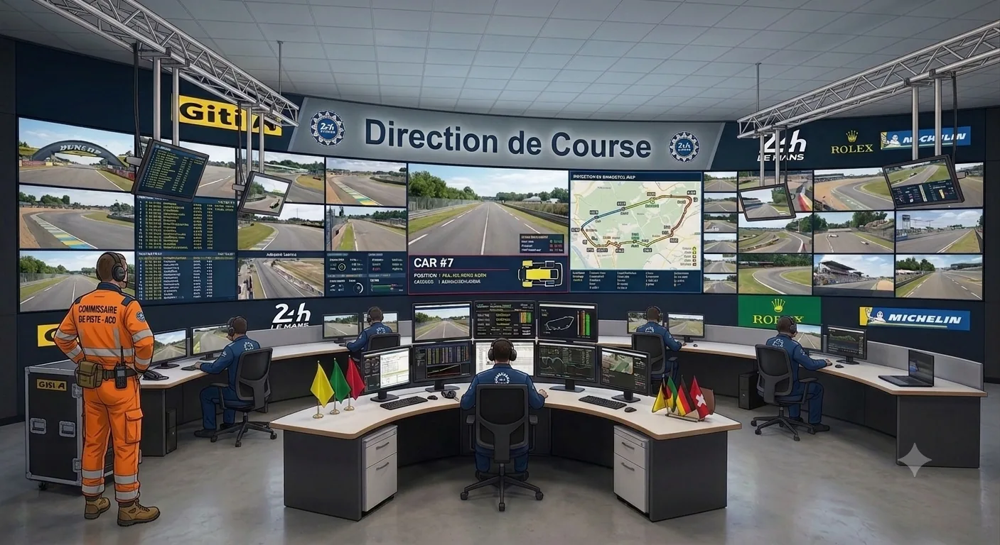
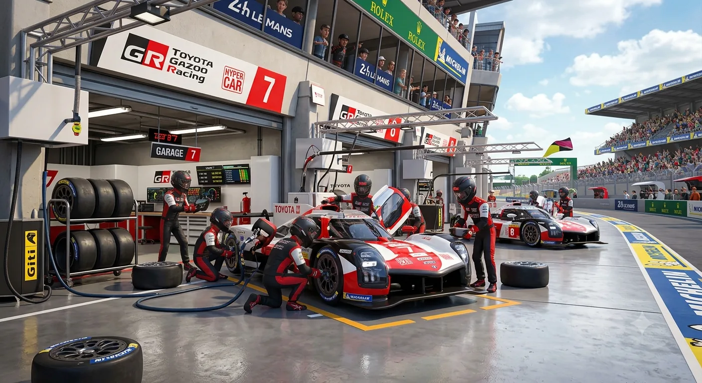
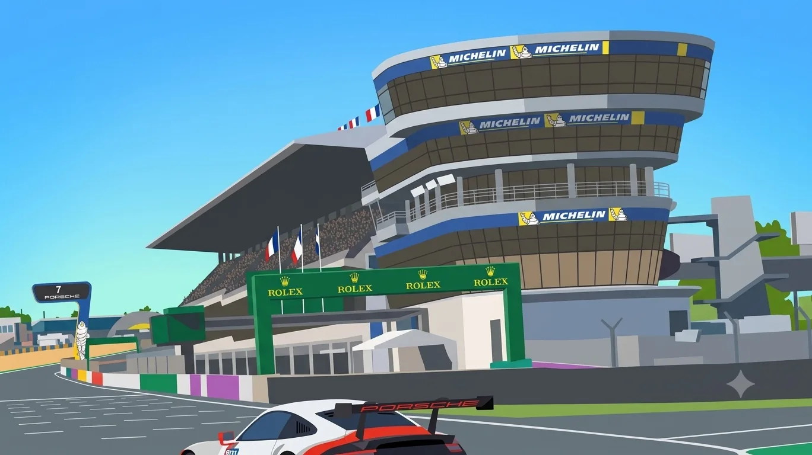
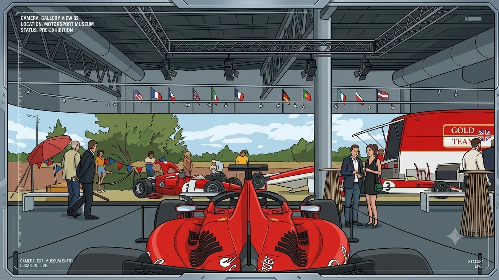

Automatisation HPIA
Déploiement automatisé de HP Image Assistant (mises à jour drivers/BIOS) sur le parc de postes HP de l'ACO.
04 — Missions
Déploiement automatisé de HP Image Assistant (mises à jour drivers/BIOS) sur le parc de postes HP de l'ACO.
Mise en cohérence des communes associées aux contacts de l'organisation, à travers l'annuaire.
Mise en place d'une supervision automatique pour détecter les boîtes mails proches de la saturation.
Déploiement automatique d'un pack de fonds d'écran Teams pour les utilisateurs de l'ACO.
05 — Terrain



